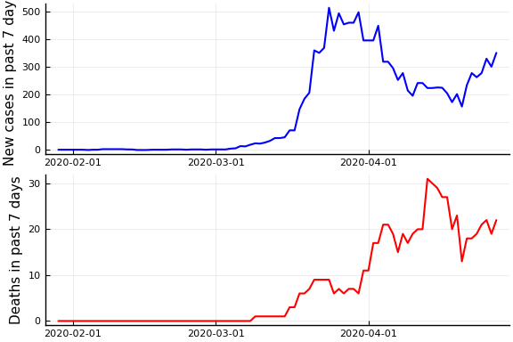
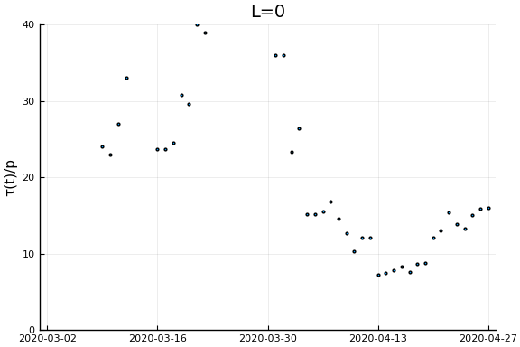
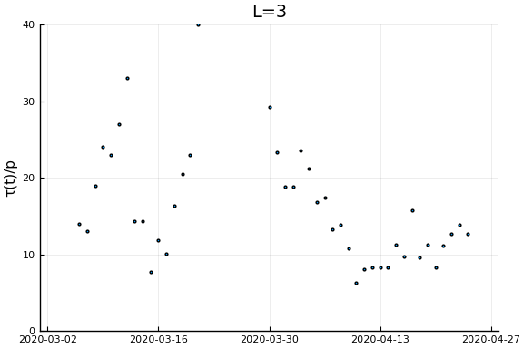
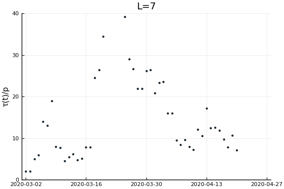
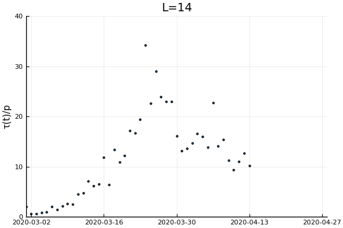
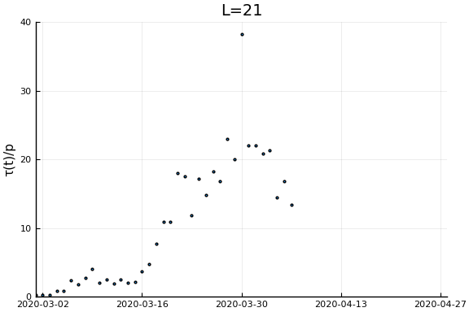

This note describes how changes in the relationship between new confirmed cases and deaths can be used to infer changes in testing.
To illustrate the idea, begin by considering a simple SIR model with the addition that infections get detected at rate $\tau(t)$.1
where $S$ is susceptible, $I$ is infections, $C$ is cumulative confirmed cases, and $D$ are deaths. Then we immediately have that
Assuming death rates are constant, then any departure from a linear relationship between $\dot{C}$ and $\dot{D}$ is due to changes in testing.
Time delays¶
The basic SIR model assume the hazard rate of death does not dependent on infection duration. This is a poor assumption, and, moreover, affects the relationship between $\dot{C}$ and $\dot{D}$. To illusture, we will assume a simple form of duration dependence – infections last $\ell$ days. After $\ell$ days a person dies with probability $p_D$. We will also change the process generating confirmed cases to new infection on day $t$ are detected with probability $\tau(t)$. The system now evolves as
Rearranging we have
Again, assuming the probability of death is constant, any departure from a linear relationship between $\dot{C}(t)$ and $\dot{D}(t-\ell)$ is due to changes in testing.
General Relationship¶
Other modifications to the model, such as an additional incubation period or random infection durations will lead to slightly different implications about the relationship betwen $\tau$, $\dot{C}$, and $\dot{D}$. However, it will always be of the form (now I’m treating time as discrete, replace the sum with an integral if you prefer continuous time):
Where $\tilde{p}_\ell$ are from inverting the relationship
where $\underline{\ell}$ is the smallest $\ell$ such that $P(\text{die time } t) | \text{infected time } t-\ell) > 0$, and assuming that death probabilities are do not depend on time of infection.
Then substituting into
gives
Data¶
using CovidSEIR, Plots, Dates
Plots.pyplot()
df = CovidSEIR.covidjhudata()
sdf=filter(x->(!ismissing.(x.Province) .& (x.Province .== "British Columbia")), df)
Δ=7
date = sdf.Date[(Δ+1):end]
newcases = sdf.confirmed[(Δ+1):end] .- sdf.confirmed[1:(end-Δ)]
deaths = sdf.deaths[(Δ+1):end] .- sdf.deaths[1:(end-Δ)]
plot( plot(date, newcases, ylabel="New cases in past $Δ days", color="blue", linewidth=1.5, legend=:none), plot(date, deaths, ylabel="Deaths in past $Δ days", color="red", linewidth=1.5, legend=:none), layout=(2,1))

Now if we assume the time from testing to death is $L$ days, then $\tau(t)/p_D = \frac{\dot{C}(t)}{\dot{D}(t+L)}$. Let’s plots this for a variety of $L$.
xlim = Dates.value.((Date("2020-03-01"), Dates.today()))
ylim = (0, 40)
ylab = "τ(t)/p"
for L in [0, 3, 7, 14, 21]
display(scatter(date[1:(end-L)], newcases[1:(end-L)]./deaths[(L+1):end], ylim=ylim, xlim=xlim,
legend=:none, ylabel=ylab, title="L=$L", markersize=2, reuse=false))
end
    
-
Whether you treat time as continuous and read $\dot{S} = dS/dt$ or treat time as discrete and read $\dot{S} = S(t) - S(t-1)$ makes no difference for anything in this note. ↩